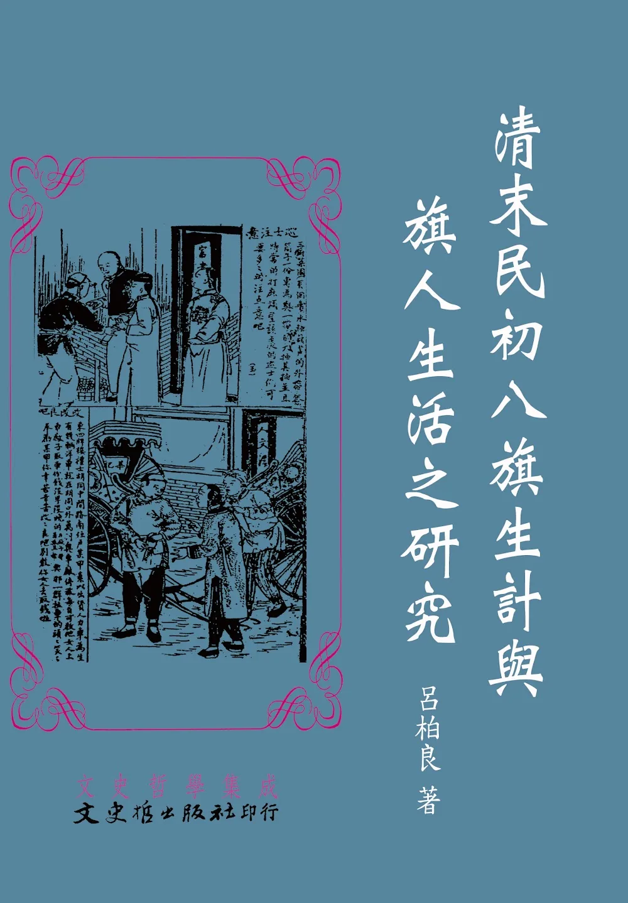

清末民初八旗生計與旗人生活之研究
《清末民初八旗生計與旗人生活之研究》由呂柏良著，探討清朝末年至民國初年（約1875－1949年間）八旗制度衰落後，旗人生計、社會生活與民族認同的變遷。本書原為作者的碩士論文，後整理出版，運用大量清代官方檔案、奏摺、地方志、報刊及民國文獻，深入分析八旗制度瓦解後旗人的生活困境與政府因應措施。 本書首先回顧八旗制度的形成與發展。八旗制度原是清太祖努爾哈赤建立的重要軍政制度，使滿洲、蒙古及漢軍旗人共同為清朝效力。然而，隨著清朝中後期財政惡化、人口增加及制度僵化，八旗俸餉不足、土地流失、就業困難等問題逐漸浮現，形成所謂的「八旗生計問題」。作者指出，這不只是經濟問題，更涉及軍事、社會、民族及政治等多重層面。 書中詳細說明清末政府如何透過屯田、興辦教育、發展實業、訓練軍警、改革旗制等方式，希望培養旗人自力謀生能力；進入民國後，北洋政府與國民政府也持續提出救濟、就業、教育及民族平等等政策，以改善旗人的生活處境，但成效有限。作者也分析旗人在制度轉型下如何重新適應社會，並探討滿族知識分子爭取權益與民族認同的歷程。
閱讀《清末民初八旗生計與旗人生活之研究》後，我對八旗制度有了更全面的認識。過去我對八旗的印象，大多停留在清朝軍事制度或影視作品中的描述，但本書讓我了解到，八旗制度不僅影響清朝的政治與軍事，更深刻左右了旗人的生活方式與社會地位。當清朝國力逐漸衰退時，原本依靠俸餉維生的旗人，也因制度失去保障而面臨生活困境。 作者透過大量史料分析，說明旗人如何在清末與民初的社會變遷中尋找新的出路，包括接受新式教育、投入工商業、擔任軍警或其他職業。這使我了解到，歷史上的制度改革往往不只是政治上的改變，更會直接影響人民的日常生活、家庭經濟及未來發展。從旗人的遭遇可以看出，一項制度若無法隨著時代調整，即使曾經成功，也可能因環境改變而逐漸失去功能。 此外，本書也讓我認識到民族認同與社會融合的重要性。清朝滅亡後，旗人不僅失去原有的政治地位，也必須重新適應新的國家制度與社會環境。作者對於政府政策、社會救濟及民族平權的分析，使我了解到近代中國在制度轉型過程中所面臨的複雜挑戰，也更加理解歷史事件背後的人文與社會意義。 整體而言，《清末民初八旗生計與旗人生活之研究》是一部兼具歷史深度與學術價值的著作，不僅完整呈現八旗制度的演變，也深入描寫旗人在時代變遷中的生活樣貌。閱讀本書後，我更加體會到歷史不只是朝代興衰，更是人民如何在制度與社會變化中努力生存與適應的真實故事，因此是一本值得深入閱讀的近代史研究作品。